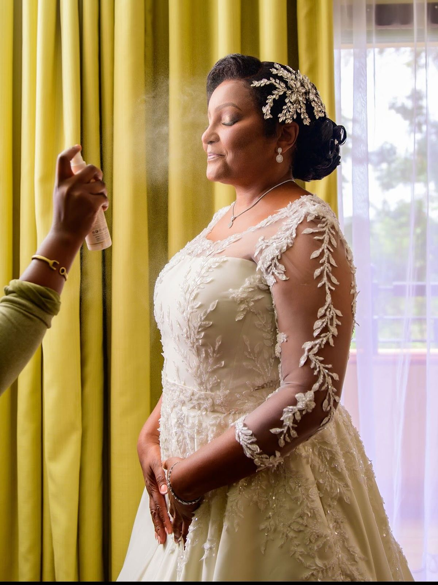
The gallery
Thirty-six
finished faces.
Brides, graduates, editorial sets and the celebrations in between. Tap any photo to open it full size — there's a note on each one about what the job actually asked for.

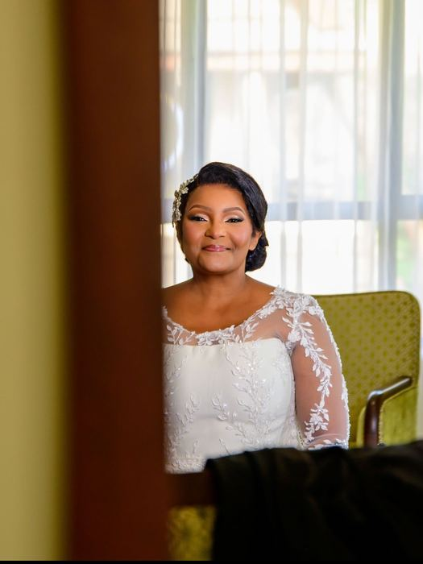


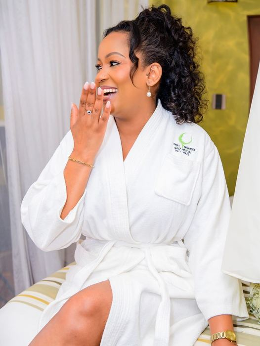
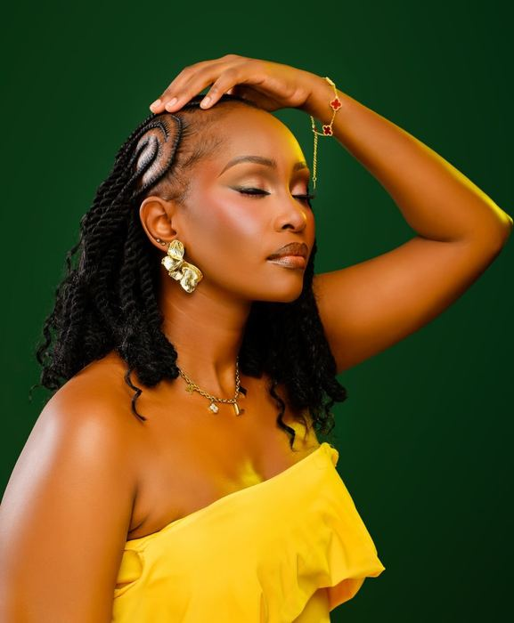
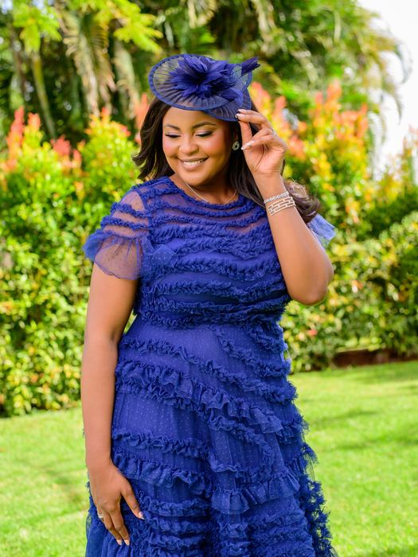
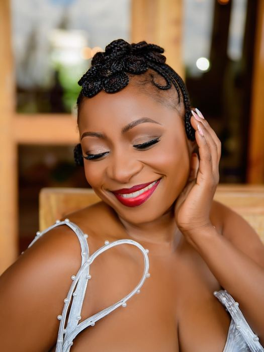
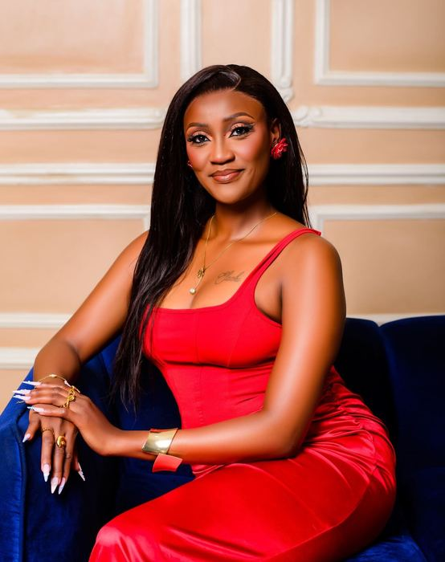
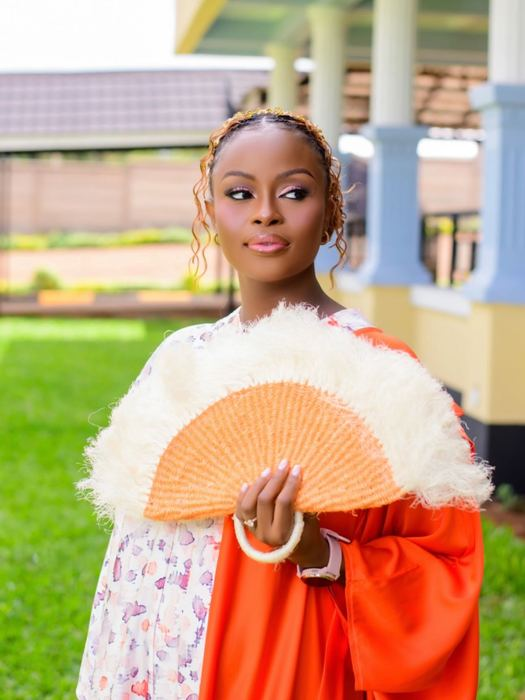
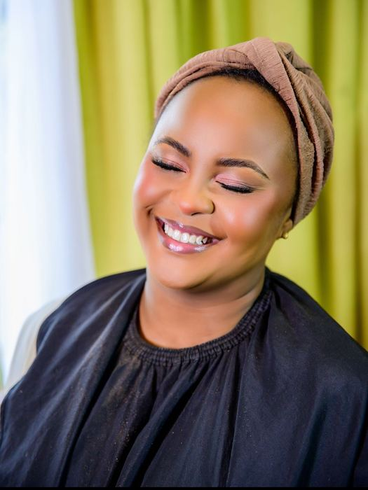
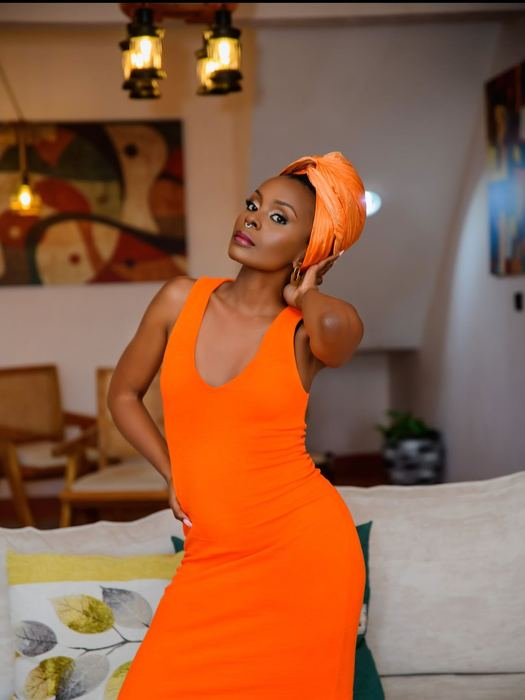
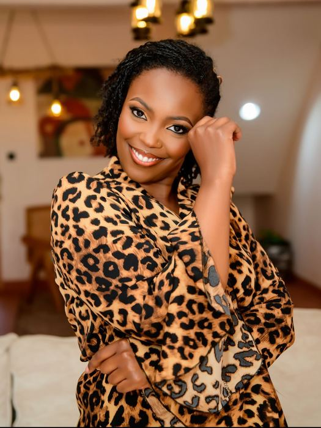
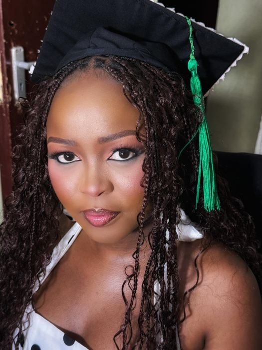
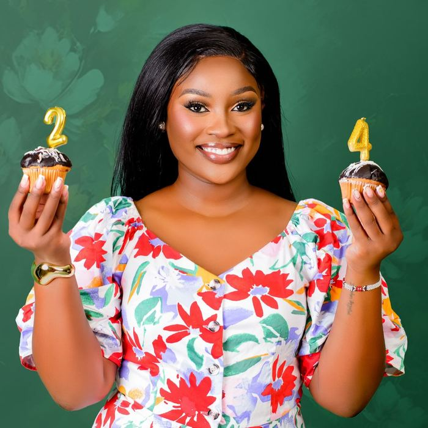
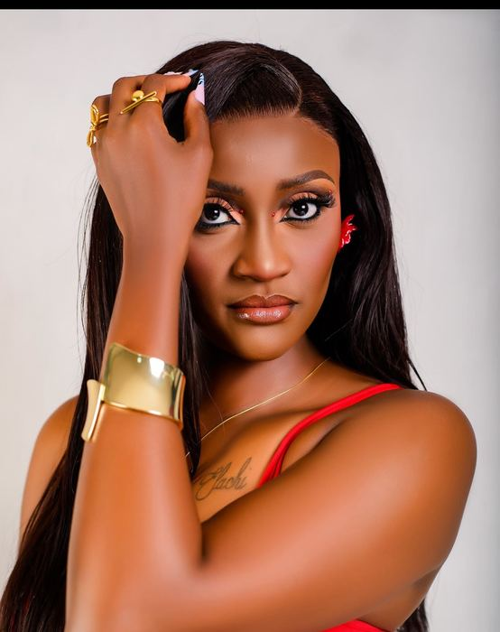
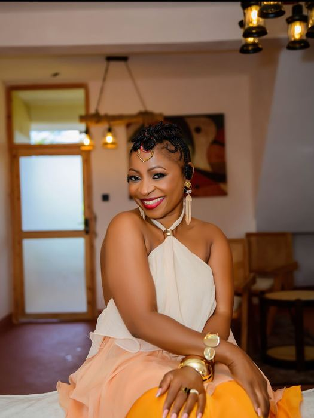
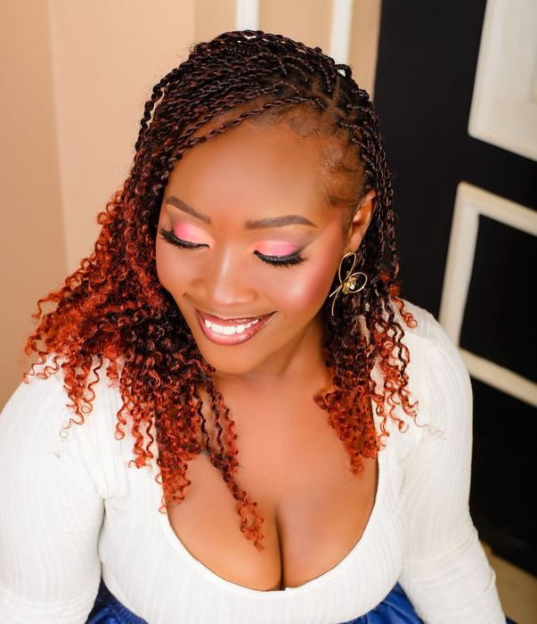
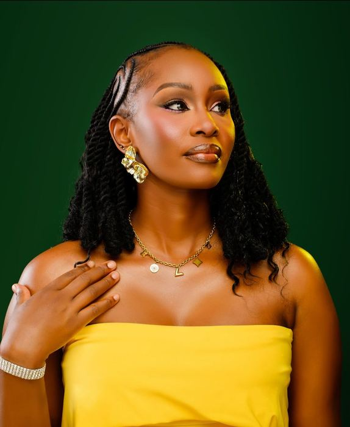
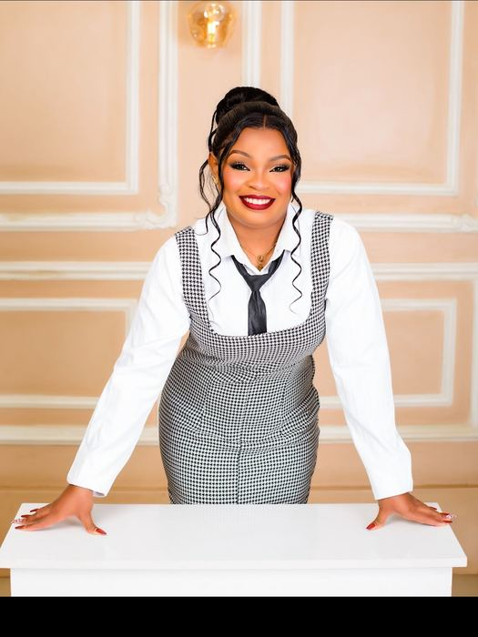
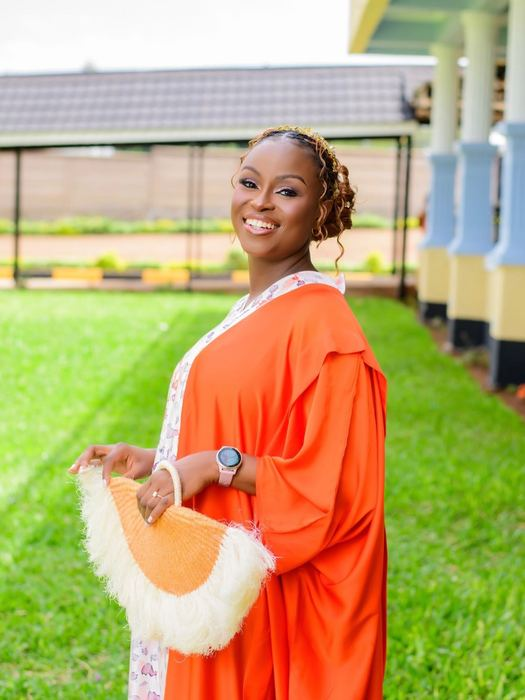
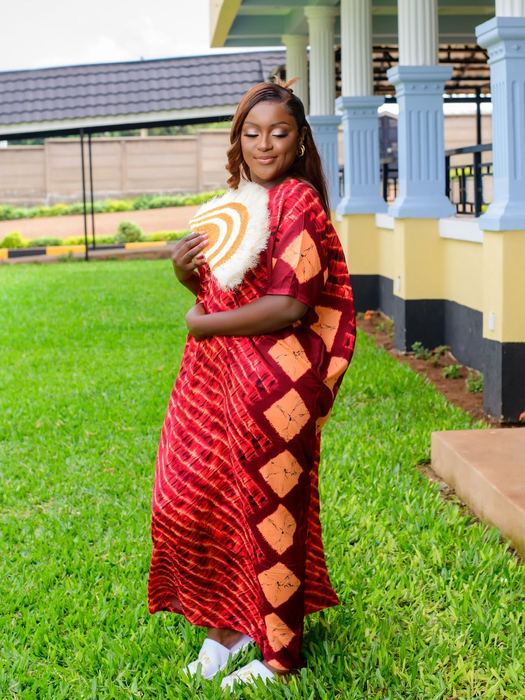
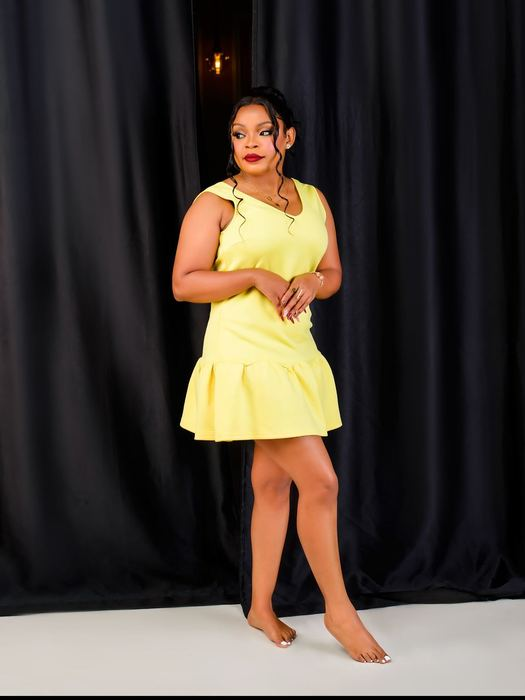
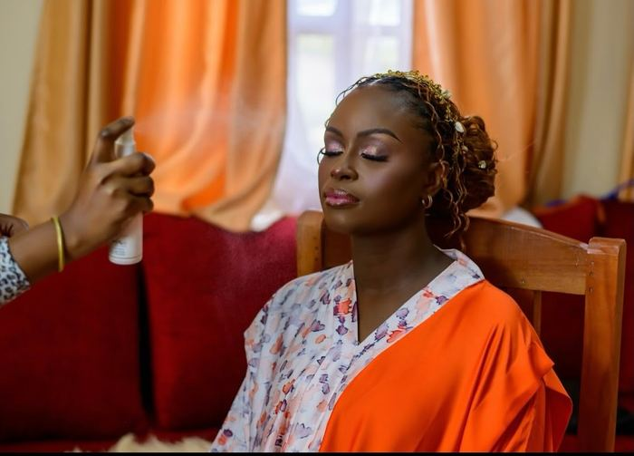
Bookings
Tell her the date and she'll tell you if it's free.
The booking form takes about thirty seconds. It writes the whole message for you and opens WhatsApp — nothing is sent until you press send.